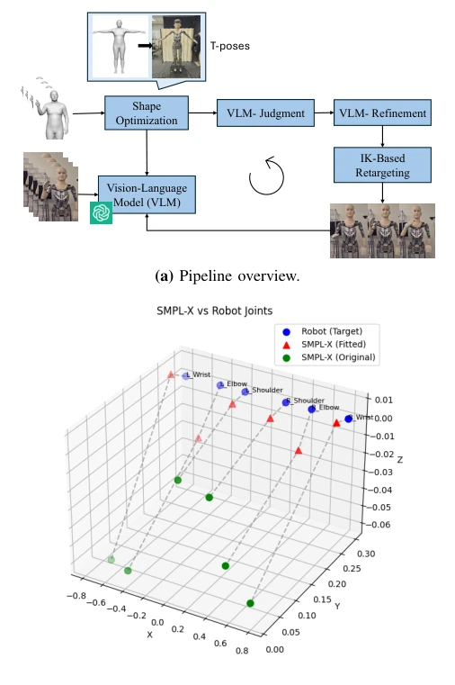
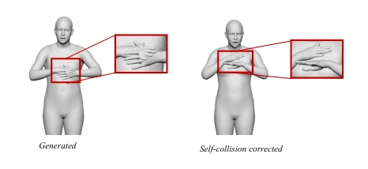
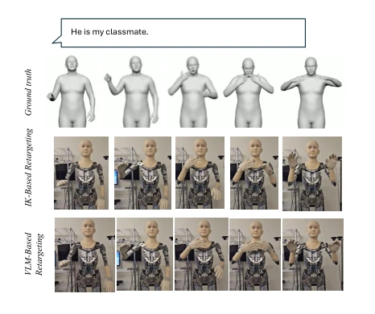

From Sign Language Generation to Humanoid Execution: Vision-Language Guided Retargeting with Collision Mitigation
Nabeela Khan, Bowen Wu, Runwu Shi, Benjamin Yen, Takeshi Ashizawa, Carlos Toshinori Ishi abspdf
论文点评Review
这篇论文试图解决一个“美梦成真”的难题：SLG 模型生成的 3D 手语动作虽然看着美，但一上真身就穿模。作者没搞新生成模型，而是搞了个“修补匠”框架。先用 VolumetricSMPL-X 把穿模的手肘和胸口“揉开”，再用 VLM 当裁判，盯着渲染视频挑刺，指挥 IK 微调。这思路挺务实，毕竟让机器人比划手语，穿模比不标准更致命。特别是对于需要精细手势的 SLG 任务，这种物理一致性检查至关重要。不过，VLM 推理慢，碰撞优化耗时 500 秒，这明显是离线工具，别指望实时交互。而且 VLM 的评判目前还是靠看图说话，缺乏量化指标，有点“玄学”。总的来说，是个不错的中间件，但离“即插即用”还差得远，适合做离线库构建。
This paper attempts to address a "dream come true" challenge: 3D sign language actions generated by SLG models, while visually appealing, suffer from mesh penetration when deployed physically. Instead of developing a new generation model, the authors propose a "tinkerer" framework. First, VolumetricSMPL-X is used to resolve penetrating elbows and chests, followed by a VLM acting as a judge to scrutinize rendered videos, identify issues, and guide IK refinement. This approach is pragmatic, as for robots performing sign language, mesh penetration is more critical than non-standard gestures. Particularly for SLG tasks requiring fine gestures, such physical consistency checks are crucial. However, VLM inference is slow, and collision optimization takes 500 seconds, indicating this is clearly an offline tool where real-time interaction should not be expected. Furthermore, VLM judgment currently relies on visual description, lacking quantitative metrics, which is somewhat "metaphysical". Overall, it is a decent middleware, but far from "plug-and-play", making it suitable for offline library construction.
Sign language is the primary communication method for the hearing impaired, and enabling robots to express sign language is meaningful [1]. However, existing SLG systems mostly output dense 3D representations like SMPL-X [6], which, while preserving kinematics, often produce hand-hand and hand-torso self-collisions. These are tolerable in rendering but lead to infeasible inverse kinematics (IK) or unstable control during robot execution. Sparse skeletons lose surface information, while dense representations, though good, introduce physical constraint difficulties. Existing robot retargeting work [7] mostly focuses on motion tracking, ignoring SL-specific semantic and geometric constraints. Additionally, precomputed dictionaries cannot handle continuous contexts [2]. Therefore, an end-to-end retargeting framework capable of handling physical feasibility while preserving semantic intent is needed to bridge the gap from generation to execution.
The overall process is divided into two stages: collision mitigation and VLM-guided retargeting. First, for SMPL-X sequences output by SLG, a differentiable volume model is constructed using VolumetricSMPL-X [9], self-collision loss is calculated, penetration is removed by optimizing pose parameters, while trajectory preservation and temporal smoothing regularization are added to prevent action deformation. Second, enter the retargeting stage. First, align SMPL-X templates to robot joints through shape optimization, minimizing joint position error. Then use an IK solver to generate joint trajectories. The core innovation lies in the VLM closed-loop: rendering robot videos compared with reference videos, the VLM acts as a visual critic to identify failure modes (e.g., wrist drift), and outputs interpretable task-space primitives (e.g., "left hand up 10cm" or "left wrist internal rotation 20 degrees"). IK re-solves based on corrected targets, iterating until the VLM is satisfied. Control primitives are defined in task space, allowing the same vocabulary to transfer across robot morphologies. The entire process is designed as offline preprocessing to avoid VLM latency.

Fig. 1: Overview of the proposed pipeline VLM-guided retargeting. (a) A generated SMPL-X signing sequence is first corrected by an offline volumetric self-collision mit- igation stage, then retargeted to the humanoid with IK. The resulting robot-rendered motion is compared against the reference SMPL-X motion by a vision–language model (VLM), which identifies embodiment-specific failures and proposes interpretable task-space correction primitives (e.g., wrist position or yaw adjustments), after which IK is re- solved. (b) Shape optimization used to align the SMPL- X template to the target robot embodiment before motion retargeting.
Tested on the CSL-Daily dataset [34]. Evaluation metrics include collision energy, pose MSE, and acceleration change. Results show the collision mitigation module reduced average collision energy from 3.52 to 0.94, 88.9% of sequences improved, and pose distortion was small. Qualitative comparison indicates that IK-only retargeting leads to hand position drift, while VLM correction is closer to reference sign language. Ablation experiments prove trajectory preservation and temporal smoothing regularization are effective, Table II shows regularization terms have a significant impact on collision reduction rate. However, VLM evaluation currently lacks quantitative benchmarks, and collision optimization takes over 500 seconds per sequence, limiting real-time performance. Future work needs to introduce learning approximations to accelerate.

Fig. 2: Qualitative results for self-collision correction. Left: raw generated pose exhibiting hand–hand interpene- tration (zoomed inset). Right: result after VolumetricSMPL- X-based optimization, which reduces self-collision while preserving the overall signing configuration.

Fig. 3: Qualitative comparison of humanoid retargeting for the sentence “He is my classmate.” Top: reference SMPL-X motion. Middle: IK-only retargeting, which is kinematically feasible but exhibits embodiment-induced de- viation, including hand drift away from the intended signing region and mismatched wrist orientation relative to the refer- ence motion. Bottom: VLM-refined retargeting after applying corrective task-space primitives, yielding a humanoid motion that more closely matches the reference sign realization.